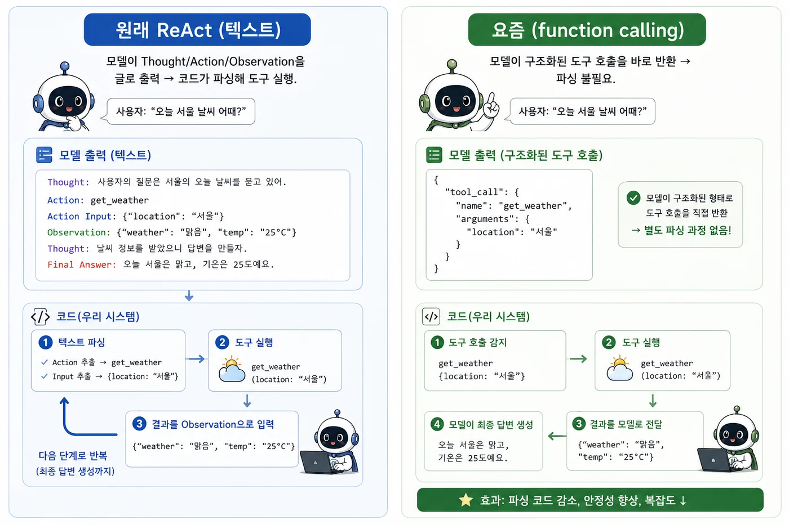
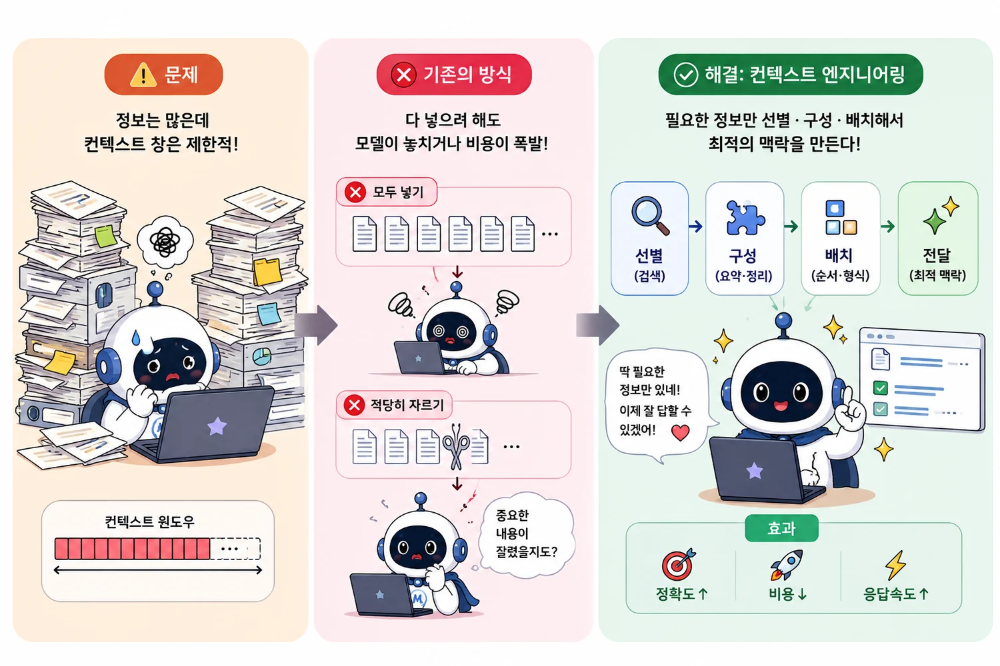

WEEK 3 · DAY 2AGENT
에이전트와
컨텍스트
/
AGENDA일정
오늘의 일정
CH0~1
에이전트란
워크플로와 무엇이 다른가. 두뇌 · 계획 · 기억 · 도구 네 가지로 이루어진다.
CH2
직접 만들기
판단 · 행동 · 관찰 세 단계를 도는 루프. 멈추는 조건을 같이 만든다.
CH3~4
컨텍스트 엔지니어링
넣을 수 있는 양이 정해져 있다. 무엇을 넣고 무엇을 뺄지 정하는 일이다.
기준
에이전트는 모델이 스스로 다음 수를 정하는 구조다. 코드가 정하면 워크플로다.
00
CHAPTER 00
에이전트란
어원워크플로와의 차이언제 쓰나
/
CH0어원
agent의 어원
L
라틴어 agere — ‘하다·행하다’
→
agent = 행위를 하는 자 · 대리인
agere (행하다)
→ agent = 행위 주체
감각
‘여행 에이전트·부동산 에이전트’처럼 — 목표를 받아 나 대신 행동하는 존재.
/
CH0직관
일상 속 에이전트
→
여행 에이전트 — 나 대신 알아보고 예약한다
→
비서 — 목표만 주면 스스로 처리한다
★
공통점 — 목표 → 스스로 판단 → 대신 행동
연결
소프트웨어 에이전트도 똑같다 — 목표를 주면 스스로 판단해 도구로 행동한다.
/
CH0배경
AI에서의 에이전트
→
고전 AI — 환경을 지각하고 행동하는 것
→
강화학습 — 상태→행동→보상의 반복 루프
i
깊게는 안 간다 — ‘루프’ 개념만 챙기면 충분
지각 → 행동
→ 결과 → 다시
챙길 것
‘관찰→행동→관찰’의 루프 — 이 루프의 판단을 LLM 이 맡으면 LLM 에이전트다.
/
CH0전환
LLM 에이전트
→
판단부(무엇을 할까)를 대형 언어모델로
→
LLM이 도구 선택·추론을 자연어로 수행
★
여기에 도구 + 루프를 붙이면 에이전트
핵심
LLM 에이전트 = LLM을 두뇌로, 도구와 루프로 감싼 행위 주체.
/
CH0한눈에
코드가 정하나, 모델이 정하나

/
CH0판단
에이전트를 쓸 자리와 피할 자리
쓸 때
경로를 미리 못 정하는 개방형 문제. 단계 수를 알 수 없을 때.
유연함이 필요
피할 때
프롬프트·검색·예시로 충분한 경우.
지연·비용↑ 거래
원칙
단순한 걸로 되면 에이전트를 쓰지 마라 — 필요할 때만.
01
CHAPTER 01
무엇으로 이루어지나
세 기둥ReAct도구
/
CH1지도
에이전트의 세 기둥
두뇌
LLM
판단의 중심.
01
계획
쪼개고, 되돌아본다.
02
기억
단기(대화)·장기(검색).
03
도구
바깥과 상호작용.
범위
이론은 여기까지 — 세부 알고리즘은 생략. 나머지는 코드로.
/
CH1계획
계획 (Planning)
쪼개기
큰 목표를 작은 단계로 나눈다.
Chain of Thought
되돌아보기
결과를 보고 다음을 고친다.
ReAct · self-correction
실전
뒤에 나오는 멀티스텝과 자기수정이 각각 이 둘이다.
/
CH1CoT
Chain of Thought
→
중간 추론 과정을 펼치게 한다
→
어려운 문제를 쉬운 단계들로
i
가장 단순하고 강력한 기법
cot.txt
# 프롬프트에 한 줄
"차근차근 단계별로 생각해줘."
# 모델이 중간 단계를 스스로 펼친다 /
CH1ReAct
ReAct = Reason + Act
Re
Reason — 무엇을 할지 생각
Act
Act — 도구로 행동
→
생각·행동·관찰을 번갈아
react.txt
Thought: 연차 규정을 찾아야겠다
Action: search_docs("연차")
Observation: 3영업일 전
Thought: 답할 수 있다 → 종료핵심
ReAct 를 코드로 옮긴 것이 에이전트다.
/
CH1ReAct
ReAct 루프의 흐름
1
Thought
무엇을 할까
2
Action
도구 호출
3
Observation
결과 관찰
↻
반복
목표까지
연결
CH2 의 코드가 이 그림 그대로다.
/
CH1한눈에
텍스트 파싱 vs 구조화 호출

/
CH1도구
도구 (Tool)
→
최신 정보·계산·행동을 외부 도구로
→
모델에 이름·설명·스키마로 알린다(function calling)
→
직접 만든 MCP 서버를 도구로 붙일 수 있다
tools.py
tools = to_openai_tools( # MCP→함수 스펙
await client.list_tools())
# 모델이 이 목록에서 골라 부른다문서화
도구 설명은 모델용 프롬프트 — 구체적일수록 잘 고른다(Anthropic).
/
CH1한눈에
기억의 두 층

02
CHAPTER 02
직접 만들기
루프시스템 프롬프트안전장치
/
CH2출발점
run_agent — 최소 에이전트
→
아래 run_agent 열 줄이 이미 ReAct 루프다
→
판단 → 도구 실행 → 관찰 → 반복
★
이 한 줄에서 시작해 조건과 안전장치를 붙여 나간다
run_agent.py
while True:
msg = llm.chat(messages, tools) # 판단
if not msg.tool_calls:
return msg.content # 종료
run_tools(msg.tool_calls) # 행동·관찰 /
CH2구조
루프의 세 단계 — 판단 · 행동 · 관찰
1
판단 — 도구를 부를지/답할지 결정
2
행동 — 고른 도구를 실행
3
관찰 — 결과를 messages에 되먹인다
↻
반복 — 도구를 더 안 부를 때까지
한 줄
이게 ReAct다 — 개념과 코드가 같은 그림.
/
CH2조종
시스템 프롬프트
→
system 메시지 = 에이전트의 성격·규칙·톤
→
“필요하면 도구로 근거를 찾아라” 한 줄이 도구 사용을 좌우
★
언제 도구 쓸지, 어떻게 답할지 여기서 정해진다
system.py
# 에이전트의 성격·규칙 = 첫 메시지
system = "너는 업무 비서다. 필요하면 도구로
근거를 찾아 한국어로 간결히 답하라."
messages = [{"role": "system", "content": system}, ...]실전
같은 도구라도 시스템 프롬프트가 행동을 바꾼다 — 먼저 여기를 손보라.
/
CH2판단
도구를 안 부르는 편이 나은 경우
→
간단한 질문·상식은 그냥 답 — 도구는 비용·지연
→
도구는 ‘모델이 모르는/바깥’ 일에만
→
시스템 프롬프트로 “필요할 때만 도구” 지시
감각
좋은 에이전트는 도구를 ‘안 쓸 때’도 안다.
/
CH2한눈에
무한 루프를 막는 조건

/
CH2안전
안전장치 — max_steps
→
반복 한도 — 같은 실수를 무한 반복하지 않게
→
비용 감각 — 스텝마다 토큰이 쌓인다
→
위험 도구는 확인 — 삭제·결제는 사람에게 되묻는다
주의
자율성이 클수록 안전장치가 중요 — 한도·확인·로그는 기본.
/
CH2실전
멀티스텝
→
검색하고 → 그 결과로 또 행동
→
루프가 여러 번 돈다
★
로그 [LLM → 도구]가 몇 번 찍히는지 보라
multistep.log
Q: 보고서 할일 추가하고 목록 보여줘
[LLM → 도구] add_task(...)
[LLM → 도구] list_tasks(...)
A: 추가했고, 현재 3건입니다. /
CH2구분
병렬 호출 vs 순차 의존
루프 1회
병렬 호출
“추가하고 목록 보여줘” — 도구 두 개를 한 번에 부르면 끝. 순차 판단이 아니다.
루프 2회 이상
순차 의존
“마지막 할 일의 우선순위를 높음으로” — id를 알아낸 뒤라야 다음 도구를 부를 수 있다.
trace
[루프 1] list_tasks({}) # 여기서 id를 알아낸다
[루프 2] set_priority({'task_id': 3, ...}) # ← 앞 결과가 있어야 가능
→ 도구를 부른 루프 2회
✅ 진짜 멀티스텝 — 앞 결과를 보고 '다음' 도구를 정했다확인법
도구를 부른 루프가 2회 이상이면 멀티스텝이다. 로그를 세면 바로 나온다.
/
CH2패턴
Plan-and-Execute
→
즉흥(ReAct) 대신 먼저 계획을 세우게
→
계획 → 단계별 실행 → (막히면) 재계획
★
단계가 많은 일에서 갈피를 덜 잃는다
1
계획
단계 나열
2
실행
하나씩
↻
재계획
필요시
선택
짧은 일은 ReAct(즉흥), 긴 일은 plan-execute(선계획) — 상황에 맞게.
/
CH2기억
메모리 — 대화 유지
→
매 호출이 새 대화면 기억이 없다
→
messages를 여러 질문에 걸쳐 유지
★
“방금 그 작업” 같은 지시가 풀린다
agent.py
class Agent:
def __init__(self, system):
self.messages = [system] # 유지
async def ask(self, q): ... # 위에 쌓기 /
CH2자기수정
Self-correction — 에러 되먹임
✕
에러로 루프가 죽으면 자기수정 불가
✓
에러를 결과처럼 되먹이면 고쳐 재시도
★
에러 문구가 곧 다음 행동의 힌트가 된다
selfcorrect.py
try:
out = call_tool(tc.name, tc.args)
except Exception as e:
out = f"오류: {e}" # 죽지 말고
messages.append(result(out)) # 되먹임 /
CH2원칙
도구 설계 원칙
→
하나의 일만 — 여러 일 하면 오용된다
→
이름·설명은 구체적으로 (모델용 프롬프트)
→
친절한 에러 — 고칠 방법을 알려준다
→
예측 가능한 반환 — 구조화 출력
감각
도구 목록은 곧 모델의 메뉴판 — 깔끔할수록 잘 고른다.
/
CH2팁
흔한 실수와 팁
→
tool_calls를 messages에 안 넣음 → 대화가 깨진다
→
종료조건 없음 → 무한 루프. 항상 한도를
→
에러에서 죽음 → try/except로 되먹여라
→
thinking 모드 → 토큰 폭주. -instruct + 끄기
감각
에이전트 디버깅의 8할은 ‘로그를 찍어’ 흐름을 보는 것.
/
CH2관찰
트레이싱 — 관찰과 디버깅
→
에이전트는 블랙박스가 되기 쉽다 — 스텝을 찍어라
→
기본 — print 로그: 어떤 도구를 어떤 인자로 불렀나
→
실무 — 트레이싱 도구(LangSmith 등)로 흐름·토큰·지연을 한눈에
실전
안 보이면 못 고친다 — 흐름을 눈으로 보는 것이 먼저.
03
CHAPTER 03
컨텍스트 엔지니어링
유한 자원네 가지 기법고르는 법
/
CH3배경
질의응답에서 에이전트로
단발 질의응답 시대
→
내가 쓴 프롬프트 한 덩어리가 입력의 전부였다.
→
잘 쓰는 법 = 프롬프트 엔지니어링.
→
대화가 끝나면 컨텍스트도 끝났다.
에이전트 시대
→
루프가 돌면서 도구 결과·파일 내용·에러가 계속 쌓인다.
→
내가 안 써도 컨텍스트가 저절로 자란다.
★
이제 문제는 무엇을 남기고 무엇을 버리느냐다.
그래서
프롬프트를 잘 쓰는 것만으로 부족해졌다. 컨텍스트를 관리하는 일이 별도의 기술이 됐다.
/
CH3역설
긴 컨텍스트의 함정
→
컨텍스트 윈도우는 계속 커졌다 — 수만 토큰에서 수십만·백만까지.
✕
그런데 넣을 수 있다고 다 넣으면 오히려 나빠진다.
→
lost in the middle — 긴 입력의 가운데에 둔 정보를 모델이 잘 못 쓴다.
→
context rot — 길어질수록 관계 파악이 흐려지고 앞서 본 규칙을 잊는다.
→
비용 — 매 턴마다 전체를 다시 보낸다. 길수록 매 턴이 비싸진다.
에이전트 한 세션의 실제 컨텍스트
system 프롬프트 · 룰(CLAUDE.md)
+ tools 도구 스펙 전부
+ 파일 read_file 로 읽은 내용
+ 결과 도구 호출 결과 (에러 포함)
+ 대화 지금까지의 모든 턴
= 루프가 돌수록 계속 커진다전환
질문이 바뀐다 — 무엇을 넣을까가 아니라 무엇을 빼도 되는가.
/
CH3한눈에
컨텍스트 예산과 우선순위

/
CH3관점
컨텍스트는 유한 자원
→
토큰이 늘수록 정확도가 떨어진다(context rot)
→
주의(attention)는 유한 — 길수록 관계 파악이 흐려진다
★
목표 — 가장 작은 고신호 토큰 집합을 찾는 것
전환
‘다 넣기’가 아니라 ‘꼭 필요한 것만’ — 이게 컨텍스트 엔지니어링.
/
CH3구성
컨텍스트의 구성 요소
| 요소 | 원칙 |
|---|---|
| 시스템 프롬프트 | 명확하게 — 너무 구체(brittle)도 너무 추상(vague)도 아니게 |
| 도구 | 기능 중복 없이, 토큰 효율적 결과 |
| 예시(few-shot) | 엣지 나열 말고 대표 사례로 |
| 히스토리 | 동적으로 필요한 부분만 |
| 검색 결과 | 필요할 때만(just-in-time) 로드 |
한 줄
각 요소가 윈도우를 두고 경쟁한다 — 신호 대비 토큰을 따진다.
/
CH3기법
기법 1 — Compaction
→
한계에 다다른 대화를 요약해 새 윈도우로
→
결정·미해결 버그는 보존, 중복 출력은 제거
→
긴 왕복 작업에서 연속성을 지킨다
compaction
# 대화가 길어지면
요약 = summarize(old_messages)
messages = [system, 요약] + recent # 새 윈도우언제
왕복이 많은 긴 작업에 — Claude Code의 자동 컴팩션이 이것.
/
CH3기법
기법 2 — 구조화된 메모
→
중요한 걸 컨텍스트 밖 메모리에 적는다
→
예 — TODO 리스트, 진행 상황 노트
→
장기 작업에서 의존성·결정을 잃지 않는다
비유
머릿속에만 담지 말고 수첩에 적는다 — 나중에 그 수첩만 다시 본다.
/
CH3기법
기법 3 — 서브에이전트 격리
→
메인은 고수준 계획, 서브는 깊은 탐색
→
서브는 광범위하게 보고 1~2천 토큰 요약만 반환
→
메인 컨텍스트를 깨끗하게 유지
이득
복잡한 조사에서 병렬 탐색 + 컨텍스트 절약을 동시에.
/
CH3기법
기법 4 — Just-in-time 로딩
→
전부 로드하지 말고 가벼운 식별자(경로·링크)만
→
런타임에 도구로 필요한 것만 로드
→
점진적 발견 — 맥락을 그때그때 채운다
jit.py
# 미리: 경로만
files = list_files() # 식별자만
# 필요할 때: 내용
text = read(files[i]) # 그때 로드연결
이틀 뒤에 다루는 RAG 가 곧 just-in-time 검색이다.
/
CH3선택
기법 선택 가이드
| 기법 | 최적 상황 |
|---|---|
| Compaction | 왕복이 많은 긴 대화 |
| 구조화 메모 | 마일스톤 있는 반복 개발 |
| 서브에이전트 | 병렬 탐색이 이득인 복잡한 조사 |
| Just-in-time | 동적·자주 바뀌는 데이터 |
실전
하나만 쓰기보다 섞어서 — 일부 미리, 나머지는 필요할 때.
04
CHAPTER 04
한계와 원칙
못 하는 것안전정리
/
CH4한계
에이전트의 한계
1
유한 문맥
대화·도구 응답이 문맥 창을 넘치면 잊는다 → CH3.
2
긴 계획
여러 단계 계획·예외 조정이 아직 서툴다.
3
형식 신뢰성
출력이 형식을 어길 수 있다 → 검증 필요.
/
CH4원칙
안전과 설계 원칙
안전
한도로 폭주 막고, 되돌릴 수 없는 행동은 확인받고, 로그로 감사.
사람이 개입할 여지를
원칙
단순함 · 계획을 투명하게 · 도구 문서화.
필요에 맞는 시스템
한 줄
성공 = 가장 정교한 게 아니라 필요에 맞는 시스템을 짓는 것.